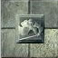
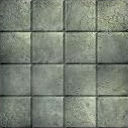
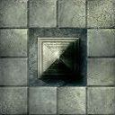
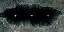
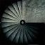
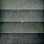

<!DOCTYPE html><html lang="en-US"><head><meta charset="UTF-8"><meta name="apple-mobile-web-app-capable" content="yes"><meta name="apple-mobile-web-app-status-bar-style" content="black-translucent"><meta name="viewport" content="width=device-width, initial-scale=1, maximum-scale=1.0, user-scalable=no"><title>Map Maker</title><link rel="stylesheet" href="./vendor/normalize-css/normalize.css"><link rel="stylesheet" href="./stylesheets/main.css"></head><body><div id="main-region" class="full-h-w"></div><script id="app_layout" type="text/x-handlebars-template"><div id="app-toolbar-region" class="toolbar-region"></div><div id="app-map-region" class="full-h-w"></div><div id="app-tile-picker-region"></div><div id="app-dialog-region"></div><div id="app-settings-region"></div></script><script id="toolbar_layout" type="text/x-handlebars-template"><section class="toolbar-btns left-btns"><div id="new-tile" class="btn"><span>Add Tile</span><i class="material-icons">add_circle</i></div><div id="clear-tiles" class="btn"><span>Clear Map</span><i class="material-icons">clear</i></div></section><section class="toolbar-btns center-btns"><div id="rotate-counter-clockwise" class="btn disabled js-tile-action"><span>Rotate Counter-Clockwise</span><i class="material-icons">rotate_left</i></div><div id="rotate-clockwise" class="btn disabled js-tile-action"><span>Rotate Clockwise</span><i class="material-icons">rotate_right</i></div></section><section class="toolbar-btns right-btns"><div id="user-settings" class="btn"><span>Settings</span><i class="material-icons">settings</i></div></section></script><script id="map_layout" type="text/x-handlebars-template"><div id="map-wrapper"><section id="map-backdrop"></section><section id="grid-region"></section><section id="tiles-region"></section></div></script><script id="tile_picker_layout" type="text/x-handlebars-template"><div class="tile-list"></div></script><script id="settings_layout" type="text/x-handlebars-template"><h2>User Settings</h2><div id="grid-opacity-setting" class="settings-section"><label>Grid Opacity</label><input id="grid-opacity" type="range" min="0" value="6" max="10" step="1"><div class="opacity-text">6</div></div><div id="language-setting" class="settings-section"><label>Preferred Language</label><select id="language"><option>English</option><option>Spanish</option><option>French</option></select></div></script><script data-main="./javascript/main.js" src="./vendor/requirejs/require.js"></script></body></html>